seed 1
pair: 16:16
DRAFT (Architect to confirm): the two sides are equal in number and kind with no ground between them, so neither should win.
survivors: 0:0
ticks: 4812
end: wipe (om-fight-2)
Approve means: this is a fair instance of an even 16 against 16 on open ground, runnable as it stands, and the prediction of a draw is yours.
Deny means: it is not a fair even fight (for example the blocks are not mirrored or one side has an edge); say what an even one looks like.
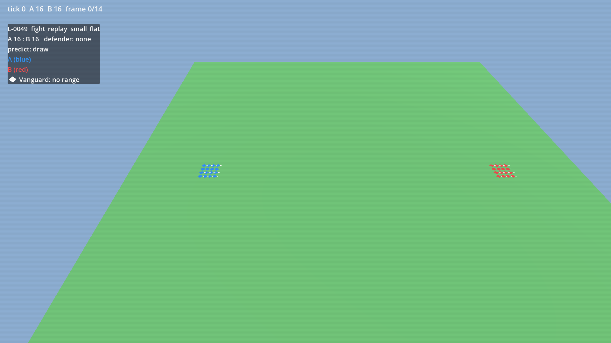

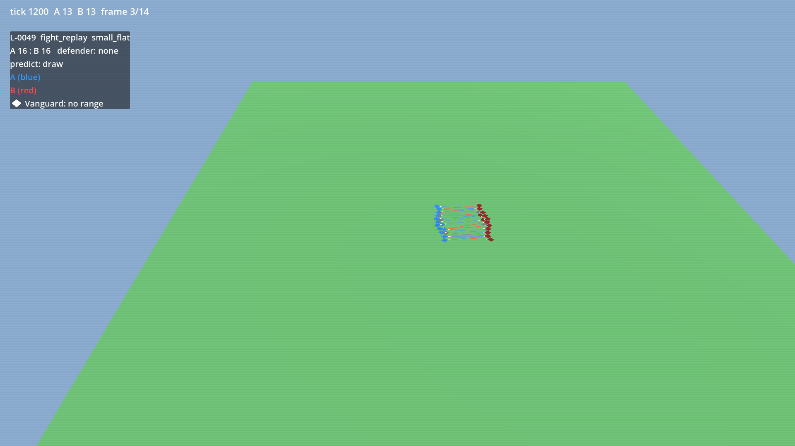


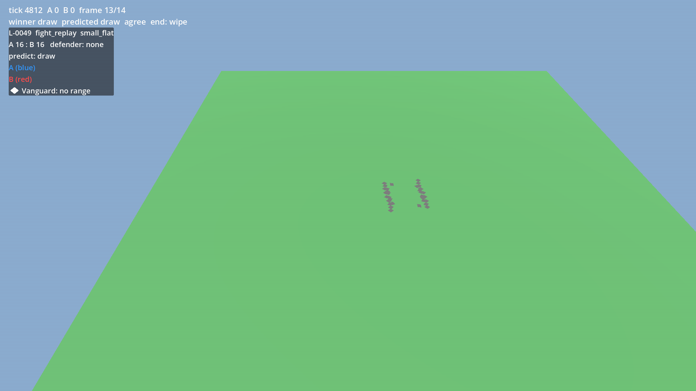
seed 1
pair: 16:32
DRAFT (Architect to confirm): side B has more Vanguards and nothing on the open field favours the other side, so side B wins.
survivors: 0:26
ticks: 2112
end: wipe (om-fight-2)
Approve means: this is a fair instance of 16 against 32 of the same kind on open ground, runnable as it stands, and side B winning is your prediction.
Deny means: it is not a fair double-headcount fight; say what one looks like.


seed 1
pair: 32:16
DRAFT (Architect to confirm): side A has more Vanguards and nothing on the open field favours the other side, so side A wins.
survivors: 26:0
ticks: 2112
end: wipe (om-fight-2)
Approve means: this is a fair instance of 32 against 16 of the same kind on open ground, runnable as it stands, and side A winning is your prediction.
Deny means: it is not a fair double-headcount fight; say what one looks like.
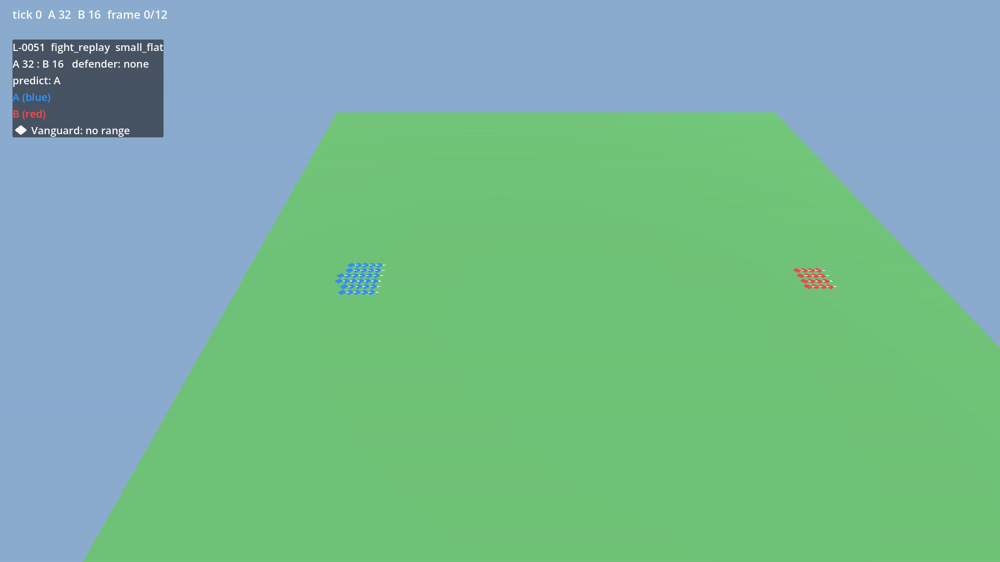


seed 1
pair: 8:64
DRAFT (Architect to confirm): side B has more Vanguards and nothing on the open field favours the other side, so side B wins.
survivors: 0:64
ticks: 1154
end: wipe (om-fight-2)
Approve means: this is a fair instance of 8 against 64 of the same kind on open ground, runnable as it stands, and side B winning is your prediction.
Deny means: it is not a fair 8-to-64 fight; say what one looks like.
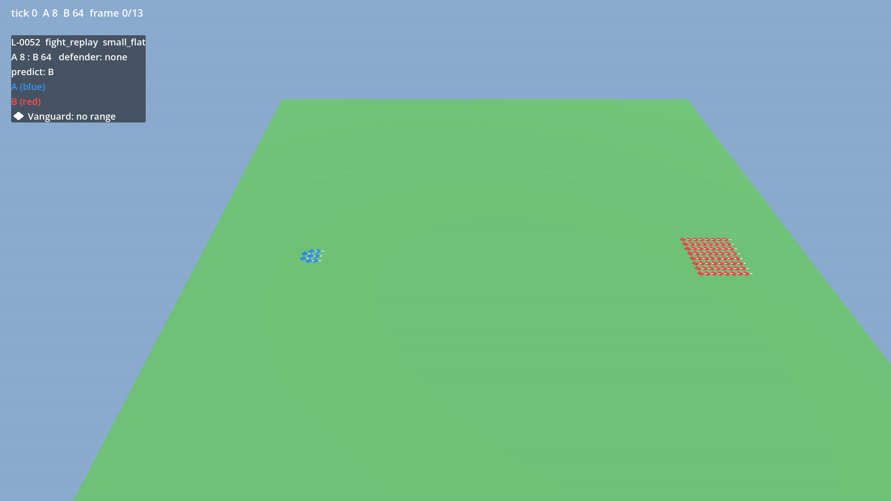


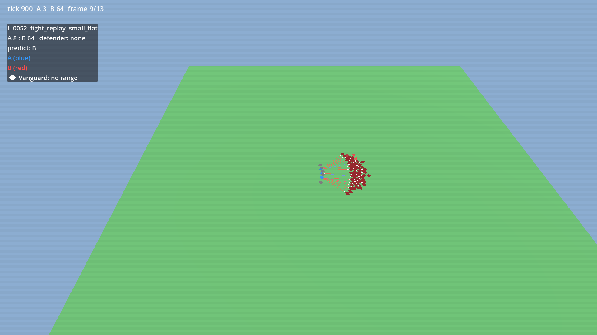
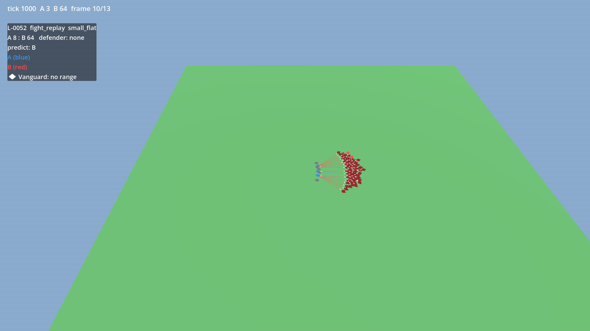
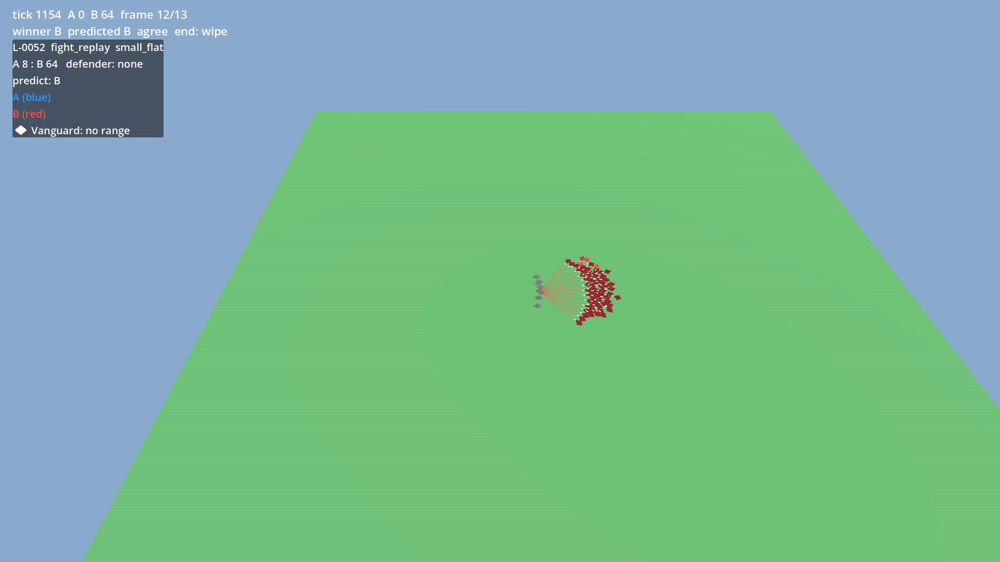
seed 1
pair: 64:8
DRAFT (Architect to confirm): side A has more Vanguards and nothing on the open field favours the other side, so side A wins.
survivors: 64:0
ticks: 1154
end: wipe (om-fight-2)
Approve means: this is a fair instance of 64 against 8 of the same kind on open ground, runnable as it stands, and side A winning is your prediction.
Deny means: it is not a fair 64-to-8 fight; say what one looks like.

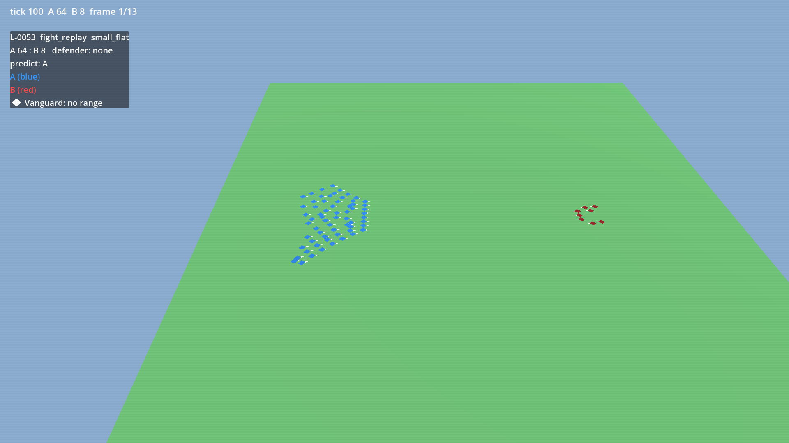


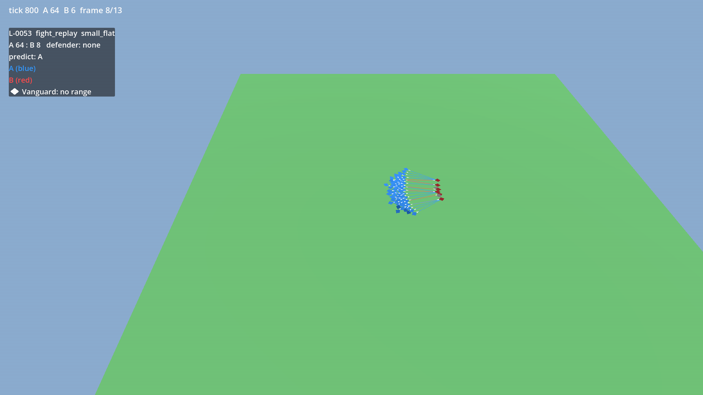
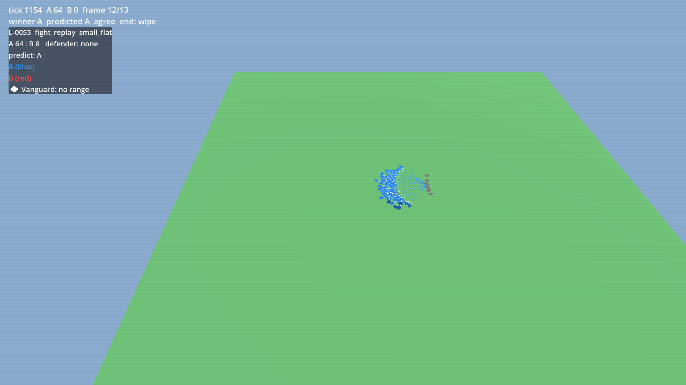
seed 1
pair: 128:128
DRAFT (Architect to confirm): the two sides are equal in number and kind with no ground between them, so neither should win.
survivors: 38:38
ticks: 8640
end: silence (om-fight-2)
stall: bring to Westley
Approve means: this is a fair instance of an even 128 against 128 on open ground, runnable as it stands, and the prediction of a draw is yours; the stall below is answered separately.
Deny means: it is not a fair even 128-a-side fight; say what one looks like.